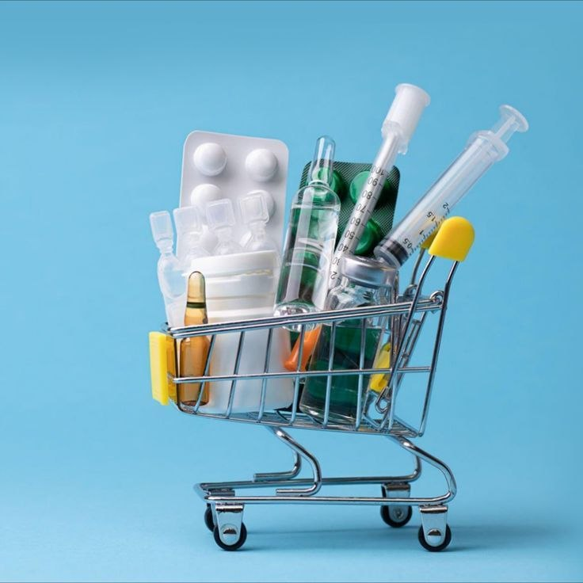

سؤال واحد
⌕اسم الدواء أو الكود يكفي لتبدأ البحث في سجل الأصناف.
دوّر في سجل الأدوية ودليل الفروع المسجلة، واتصل للتأكد قبل المشوار — بيانات المخزون مش لحظية.
واجهة توضيحية مرتبطة ببيانات دوائي
حالة «متاح» مأخوذة من سجل الأصناف العام في الملف، ولا تؤكد توفر الدواء في صيدلية بعينها.
مريض محتاج معلومة يعتمد عليها، وصيدلية محتاجة تشوف النقص قبل ما يعطّلها. دوائي بيجمع نقطة البداية في مكان واحد.
اسم الدواء أو الكود يكفي لتبدأ البحث في سجل الأصناف.
الكمية والفئة والحالة تظهر بوضوح، من غير وعود بتوفر غير مؤكد.
تواصل مع دليل الفروع، أو احفظ دواءك للرجوع له على نفس الجهاز.
واجهة واحدة تجمع اللي نعرفه، وتوضح اللي لسه محتاج ربط.
ابحث بالاسم أو الكود، واستخدم اقتراحات الكتابة لتوصل للصنف بسرعة.

02شوف الكمية والفئة وحد الطلب كما وردت في ملف البيانات.
استخدم رقم التواصل المدرج، لأن المخزون ومواعيد العمل مش مربوطين بالفروع حاليًا.
المريض يبحث بهدوء. والصيدلية تقدر تتابع بياناتها لما تتربط الخدمة بمخزون حي.
اختار نوع حسابكابحث في الأصناف، احتفظ بأدويتك على جهازك، وتواصل مع الفروع المدرجة بدون ما نخلط بين دليل الفروع وسجل المخزون.
المعلومات إرشادية مبنية على تصنيف الدواء في ملف المصدر، وليست بديلًا عن سؤال الطبيب أو الصيدلي.
ابحث عن دواء من الأعلى واضغط على النتيجة لعرض التفاصيل.
اختار نجمة من نتيجة البحث. القائمة دي بتتخزن على جهازك فقط.
اكتب اسم الدواء ومنطقتك، ونساعدك تلاقي فروعًا مسجلة قريبة للتواصل معها. لا تسلّم أي دواء منتهي الصلاحية أو مفتوحًا بشكل غير آمن.
اكتب البيانات لعرض الصيدليات المسجلة في منطقتك.
مساعد محلي يعتمد على بيانات الموقع الحالية. لا يقدم تشخيصًا أو جرعات، ويطلب منك الرجوع للصيدلي عند الحاجة.
ابدأ بجزء من الاسم أو جرّب الاسم المتداول، وشوف أقرب تطابق في الكتالوج.
ما تعتمدش على سجل غير مباشر لحالة حياة أو موت. اتصل بالطوارئ المحلية أو بصيدلية موثوقة.
سجّل اهتمامك بالمنصة. ربط المخزون ونقل النواقص محتاج موافقة ونظام خلفي.
دي أمثلة استخدام، مش شهادات أو تقييمات من عملاء.
إجابات عملية تساعدك تاخد الخطوة الصح بسرعة.
ابحث عن الدواء وشوف آخر كمية مسجلة في دوائي، وبعدها افتح دليل الصيدليات واتصل بالفرع قبل ما تتحرك لتأكيد التوفر والكمية.
اكتب المحافظة أو المنطقة في قسم الفروع لعرض الصيدليات وأرقام التواصل. وللسعر أو البدائل، استخدم زر «ابحث على الويب بالعربي» أو اتصل بالصيدلية مباشرة.
في النسخة الحالية تقدر تستخدم البحث والحفظ والتبرع مباشرة. بيانات الحساب التجريبية تُحفظ داخل بيئة دوائي المحلية، ونوصي بعدم إدخال بيانات حساسة أو كلمات مرور مستخدمة في خدمات أخرى.
كلمة «متاح» تعني إن الصنف موجود في سجل الأدوية العام بالكمية المسجلة. استخدم بيانات الفرع واتصل به للتأكد من وجود نفس الدواء قبل الزيارة.
أيوه. اكتب الاسم المتداول مثل «بنادول» أو «كتافلام» في مربع البحث، وسيعرض لك الاسم المسجل والمادة الفعالة. وتقدر تضغط «ابحث على الويب بالعربي» لمراجعة معلومات إضافية.